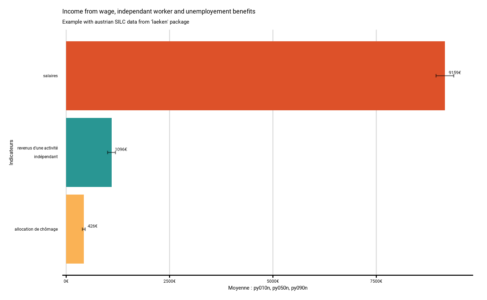
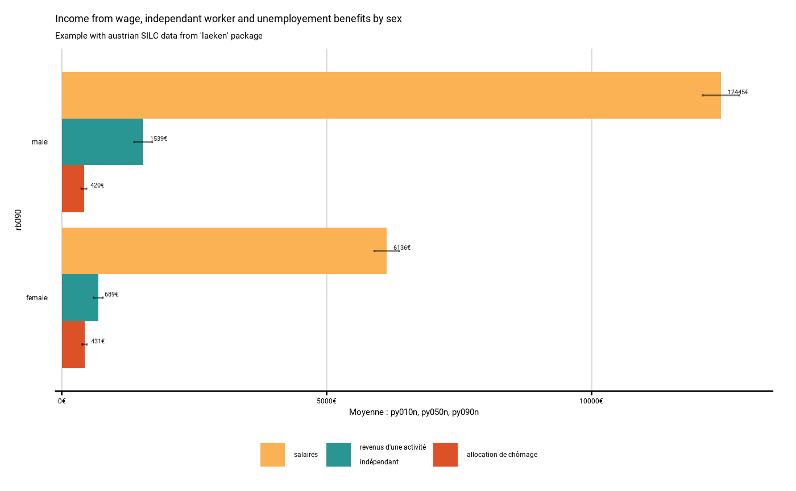
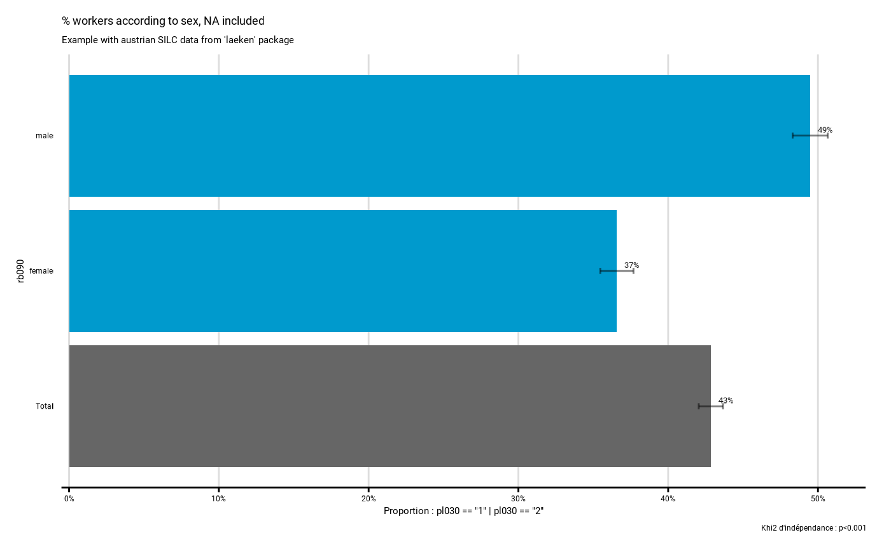
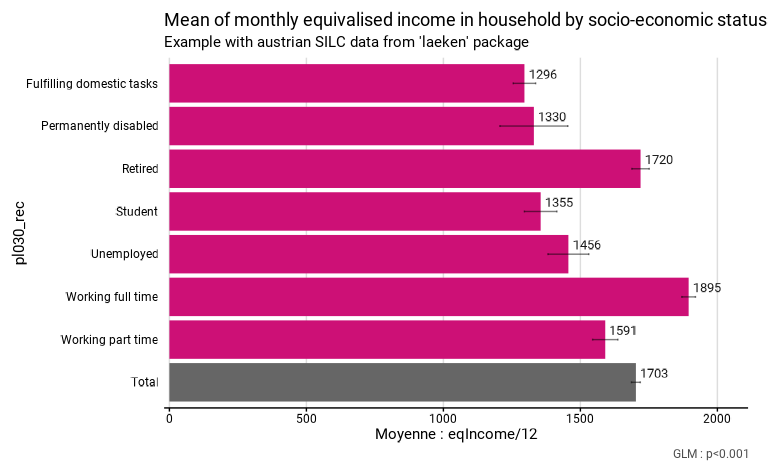
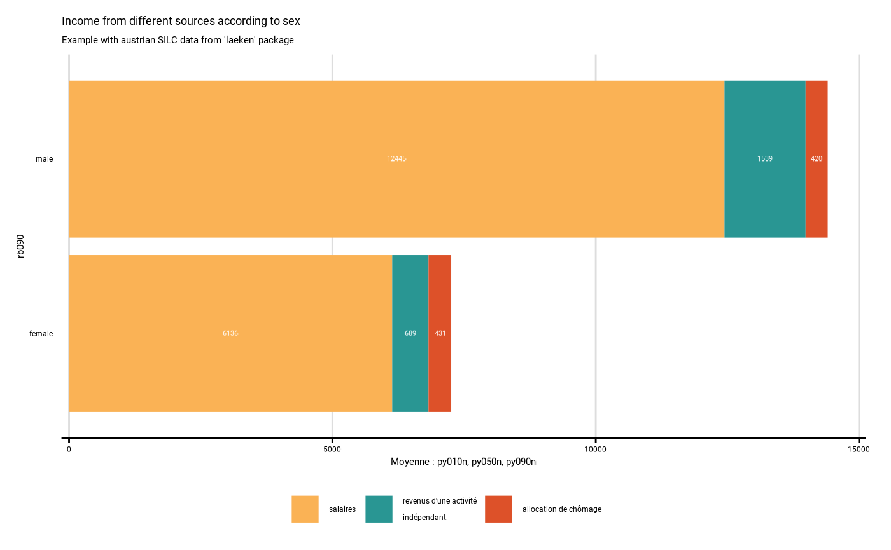
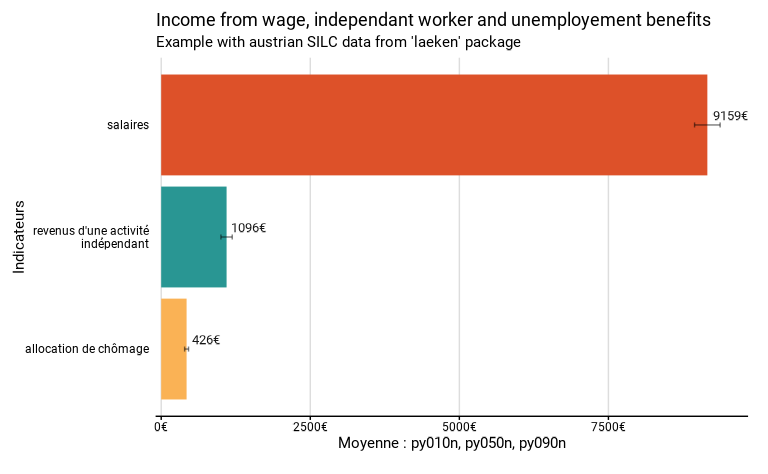
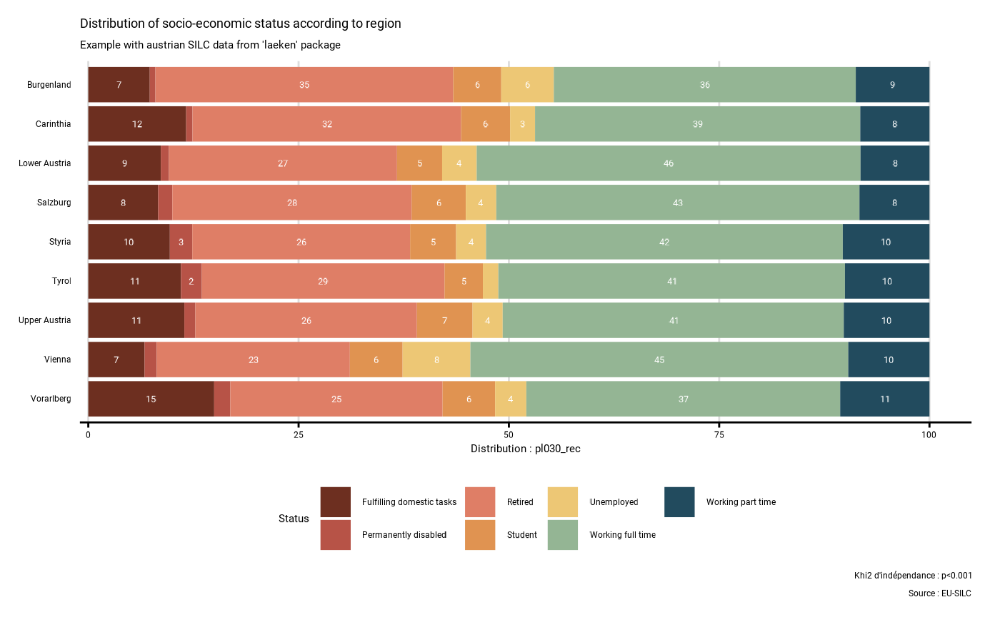

Overview of functionr functions
fonctionr_functions.RmdL’objectif de fonctionr est de faciliter l’analyse de
données issues de sondages complexes, dont la manipulation est parfois
laborieuse. fonctionr a été développé dans l’idée de
réduire la taille du code à écrire pour produire les résultats
descriptifs et d’analyses bivariées les plus courants.
Le package a également été construit pour pouvoir utiliser
directement les résultats produits dans un rapport. Ainsi,
fonctionr produit en une seule fonction : un tableau de
résultats avec les indicateurs voulus, les effectifs et leurs
intervalles de confiance ; un graphique prêt à être publié et le plus
souvent un test statistique le plus approprié aux variables étudiées. Il
est aussi possible de directement exporter ces trois résultats dans un
fichier Excel.
Ce guide se structure de la manière suivante. Dans un premier temps on décrit les différentes fonctions, ce qu’elles produisent et dans quels cas elles peuvent être utilisées. Dans un deuxième temps, on présente un tableau récapitulatif des arguments. De nombreux arguments revenant dans plusieurs fonctions, il est plus facile de présenter la structure globale de ceux-ci que de se répéter pour chaque fonction.
Présentation des différentes fonctions
La plupart des fonctions de fonctionr permettent, à
partir de données issues d’un sondage (complexe mais aussi simple), de
produire un graphique, un tableau d’indicateurs et les résultat d’un
test statistique. Les fonctions produisent toutes une liste qui contient
la plupart du temps ces trois objets :
L’objet
graphest un graphique qui permet la visualisation des indicateurs calculés avec leurs intervalles de confiance. Il s’agit d’un objetggplot2qui peut donc aussi être modifié par la suite. Le graphique se veut suffisamment finalisé pour être directement utilisable dans une publication.L’objet
tabest un dataframe qui reprend les chiffres sur base desquels le graphique est construit. Les différentes colonnes reprennent généralement le nom de l’indicateur, de la modalité et des éventuelles facettes, les valeurs des indicateurs, leurs bornes d’intervalle de confiance, le nombre de personnes dans l’échantillon dans chaque catégorie, l’estimation du nombre de personnes dans la population dans chaque catégorie et les bornes de l’intervalle de confiance de cette estimation.L’objet
test.statest une liste qui contient les différents résultats d’un test statistique lorsqu’il y en a un qui est pertinent.
La plupart des fonctions permettent aussi d’exporter directement ces trois résultats dans un format Excel, dans l’idée de pouvoir facilement communiquer les résultats à une tierce personne, ou à un graphiste dans le cas du travail de mise en page d’un rapport.
Dans la suite de cette partie, nous passons les fonctions en revue en indiquant quels sont leurs objectifs et spécificités.
distrib_discrete()
distrib_discrete(), avec distrib_d() comme
alias, calcule la distribution (en proportions relatives) des
différentes modalités d’une variables qualitative. Pour l’exemple, nous
utilisons la base de données de l’enquête SILC menée en Autriche en
2006, contenue dans le package laeken. Nous chargeons
d’abord les données et recodons le statut socio-économiques
(pl030) pour lui donner des labels intelligibles, utilisés
dans la suite des exemples :
library(fonctionr)
library(knitr)
# Loading of data
data(eusilc, package = "laeken")
# Recoding eusilc$pl030 into eusilc$pl030_rec
eusilc$pl030_rec <- NA
eusilc$pl030_rec[eusilc$pl030 == "1"] <- "Working full time"
eusilc$pl030_rec[eusilc$pl030 == "2"] <- "Working part time"
eusilc$pl030_rec[eusilc$pl030 == "3"] <- "Unemployed"
eusilc$pl030_rec[eusilc$pl030 == "4"] <- "Student"
eusilc$pl030_rec[eusilc$pl030 == "5"] <- "Retired"
eusilc$pl030_rec[eusilc$pl030 == "6"] <- "Permanently disabled"
eusilc$pl030_rec[eusilc$pl030 == "7"] <- "Fulfilling domestic tasks"Ci-dessous, la fonction distrib_d() décrit la
distribution des différents statuts socio-économiques dans le dataframe
eusilc, avec une le poids rb0501. Comme on le voit, les
variables sont indiquées sans guillemets, à la manière de la syntaxe du
tidyverse. Nous affichons le graphique contenu dans la
liste produite :
# Computation, taking sample design into account
eusilc_dist_d <- distrib_d(
data = eusilc,
weights = rb050,
quali_var = pl030_rec,
probs = c(.2, .15, .1, .1, .25, .1, .1),
title = "Distribution of socio-economic status",
subtitle = "Example with austrian SILC data from 'laeken' package"
)
#> Input: data.frame
#> Sampling design -> ids: `1`, weights: rb050
eusilc_dist_d$graph
La liste contient également un dataframe tab qui reprend
les chiffres sur base desquels le graphique est construit. Il comprend
les colonnes suivantes : le nom de la modalité (pl030_rec),
l’estimation de la proportion de la population appartenant à la modalité
(prop), les bornes inférieure (prop_low) et
supérieure (prop_upp) de l’intervalle de confiance de cette
estimation à un niveau de confiance de 95%, le nombre de personnes dans
l’échantillon appartenant à la modalité (n_sample),
l’estimation du nombre de personnes dans la population appartenant à la
modalité (n_weighted), et les bornes inférieure
(n_weighted_low) et supérieure
(n_weighted_upp) de l’intervalle de confiance de cette
estimation à un niveau de confiance de 95% :
kable(eusilc_dist_d$tab)| pl030_rec | prop | prop_low | prop_upp | n_sample | n_weighted | n_weighted_low | n_weighted_upp |
|---|---|---|---|---|---|---|---|
| Fulfilling domestic tasks | 0.0947590 | 0.0896727 | 0.1000353 | 1207 | 640311.5 | 605407.37 | 675215.6 |
| Permanently disabled | 0.0155284 | 0.0132937 | 0.0180266 | 178 | 104929.8 | 89217.39 | 120642.2 |
| Retired | 0.2674090 | 0.2593670 | 0.2755681 | 3146 | 1806953.6 | 1750021.19 | 1863886.1 |
| Student | 0.0585782 | 0.0544839 | 0.0628839 | 736 | 395828.7 | 367610.60 | 424046.7 |
| Unemployed | 0.0448779 | 0.0411188 | 0.0488757 | 518 | 303251.7 | 277166.40 | 329337.1 |
| Working full time | 0.4247086 | 0.4157662 | 0.4336881 | 5162 | 2869868.1 | 2805298.02 | 2934438.3 |
| Working part time | 0.0941388 | 0.0889702 | 0.0995053 | 1160 | 636120.9 | 600495.39 | 671746.4 |
La liste contient pour finir le résultat du test statistique dans
l’objet test.stat. Dans ce cas, il s’agit du khi2
d’adéquation. Ce test est réalisé avec comme hypothèse nulle la
répartition de la population selon le vecteur mentionné dans l’argument
probs = c(.2, .15, .1, .1, .25, .1, .1), c’est-à-dire 20%
de travailleurs à temps plein, 15% de travailleurs à temps partiel, 10%
de chômeurs, 10% d’étudiants, 25% de pensionnés, 10% de personnes en
incapacité permanente de travail et 10% de personnes au foyer. Si aucun
vecteur n’avait été mentionné dans probs, aucun test
n’aurait été effectué. Si le vecteur n’a pas une somme de 1, il est
ajusté pour avoir une telle somme. Notons que la p-valeur du test est
mentionnée sur le graphique.
eusilc_dist_d$test.stat
#>
#> Design-based chi-squared test for given probabilities
#>
#> data: ~pl030_rec
#> X-squared = 11462652, scale = 1300.5577, df = 2.9068, p-value < 2.2e-16
distrib_group_discrete()
distrib_group_discrete(), avec
distrib_group_d() comme alias, calcule la distribution (en
pourcentages) des différentes modalités d’une variables qualitative
selon les modalités d’une autre variable qualitative, que l’on peut
considérer comme des groupes. Par rapport aux autres fonctions, faute de
représentation adéquate, les intervalles de confiance ne sont pas
indiqués sur le graphique. Le test statistique repris est celui du khi2
de Pearson avec l’ajustement de Rao & Scott. Ce test est réalisé
avec comme hypothèse nulle le fait que les deux variables qualitatives
(d’intérêt et de groupe) soient statistiquement indépendantes.
L’exemple ci-dessous montre la distribution des fréquences des
différents statuts socio-économiques (pl030_rec) selon la
nationalité (pb220a).
eusilc_dist_group_d <- distrib_group_d(eusilc,
weights = rb050,
group = pb220a,
quali_var = pl030_rec,
title = "Distribution of socio-economic status according to nationality",
subtitle = "Example with austrian SILC data from 'laeken' package"
)
#> Input: data.frame
#> Sampling design -> ids: `1`, weights: rb050
eusilc_dist_group_d$graph
#> Warning: Removed 1 row containing missing values or values outside the scale range
#> (`geom_text()`).
kable(eusilc_dist_group_d$tab)| pb220a | pl030_rec | prop | prop_low | prop_upp | n_sample | n_weighted | n_weighted_low | n_weighted_upp |
|---|---|---|---|---|---|---|---|---|
| AT | Fulfilling domestic tasks | 0.0890097 | 0.0838443 | 0.0943860 | 1036 | 548488.996 | 516023.437 | 580954.56 |
| AT | Permanently disabled | 0.0118904 | 0.0098573 | 0.0142152 | 125 | 73270.239 | 60134.524 | 86405.95 |
| AT | Retired | 0.2847480 | 0.2761664 | 0.2934481 | 3055 | 1754653.538 | 1698341.728 | 1810965.35 |
| AT | Student | 0.0602425 | 0.0559096 | 0.0648053 | 693 | 371221.971 | 343916.447 | 398527.49 |
| AT | Unemployed | 0.0387595 | 0.0351095 | 0.0426739 | 411 | 238841.120 | 215672.236 | 262010.00 |
| AT | Working full time | 0.4211431 | 0.4118068 | 0.4305220 | 4689 | 2595137.383 | 2532480.191 | 2657794.57 |
| AT | Working part time | 0.0942067 | 0.0888083 | 0.0998211 | 1064 | 580513.655 | 546450.720 | 614576.59 |
| EU | Fulfilling domestic tasks | 0.1237229 | 0.0886636 | 0.1664318 | 38 | 20343.203 | 13851.220 | 26835.19 |
| EU | Permanently disabled | 0.0497860 | 0.0279745 | 0.0811021 | 15 | 8186.081 | 4019.414 | 12352.75 |
| EU | Retired | 0.1546538 | 0.1145657 | 0.2021540 | 45 | 25429.018 | 17927.573 | 32930.46 |
| EU | Student | 0.0469879 | 0.0243775 | 0.0809404 | 12 | 7726.014 | 3314.916 | 12137.11 |
| EU | Unemployed | 0.0920600 | 0.0594485 | 0.1346034 | 24 | 15137.002 | 8967.805 | 21306.20 |
| EU | Working full time | 0.4456442 | 0.3859151 | 0.5065587 | 125 | 73275.269 | 60304.313 | 86246.23 |
| EU | Working part time | 0.0871452 | 0.0561203 | 0.1277623 | 24 | 14328.894 | 8481.712 | 20176.08 |
| Other | Fulfilling domestic tasks | 0.1659561 | 0.1404268 | 0.1940563 | 133 | 71479.272 | 59272.901 | 83685.64 |
| Other | Permanently disabled | 0.0544993 | 0.0385456 | 0.0745186 | 38 | 23473.492 | 15839.759 | 31107.23 |
| Other | Retired | 0.0623876 | 0.0458183 | 0.0826635 | 46 | 26871.077 | 19001.520 | 34740.63 |
| Other | Student | 0.0391925 | 0.0266467 | 0.0553957 | 31 | 16880.683 | 10879.696 | 22881.67 |
| Other | Unemployed | 0.1144004 | 0.0919850 | 0.1400576 | 83 | 49273.628 | 38598.925 | 59948.33 |
| Other | Working full time | 0.4677267 | 0.4310077 | 0.5047079 | 348 | 201455.494 | 180187.710 | 222723.28 |
| Other | Working part time | 0.0958375 | 0.0755961 | 0.1193657 | 72 | 41278.341 | 31700.164 | 50856.52 |
eusilc_dist_group_d$test.stat
#>
#> Pearson's X^2: Rao & Scott adjustment
#>
#> data: NextMethod()
#> F = 32.8, ndf = 11.957, ddf = 144750.034, p-value < 2.2e-16
prop_group()
prop_group() calcule des proportions pour les
différentes modalités d’une variable qualitative, que l’on peut
considérer comme des groupes. Pour indiquer la proportion à calculer,
l’utilisateur peut indiquer soit une variable dichotomique, soit
directement une expression (sans guillemet, à la manière du
tidyverse) à partir de laquelle la proportion est calculée.
L’exemple ci-dessous compare la proportion d’individus qui bénéficient
d’une allocation de chômage (calculé avec l’expression
py090n > 0) selon les différents statuts
socio-économiques (pl030_rec).
eusilc_prop <- prop_group(eusilc,
group = pl030_rec,
prop_exp = py090n > 0,
weights = rb050,
title = "% of ind. receiving unemployment benefits in their hh by soc.-eco. stat.",
subtitle = "Example with austrian SILC data from 'laeken' package"
)
#> Input: data.frame
#> Sampling design -> ids: `1`, weights: rb050
#> Variable(s) détectée(s) dans l'expression : py090n
#> 0 lignes supprimées avec valeur(s) manquante(s) pour le(s) variable(s) de l'expression
eusilc_prop$graph
Le graphique et le tableau contiennent une modalité
Total qui reprend l’estimation de la proportion pour
l’ensemble de la population de référence. Dans le dataframe
tab produit, on trouve l’estimation du nombre de personnes
dans la population pour lesquelles le critère de proportion est vérifié
(n_true_weighted) accompagné de ses bornes inférieure
(n_true_weighted_low) et supérieure
(n_true_weighted_upp) de l’intervalle de confiance à un
niveau de confiance de 95%. On trouve également l’estimation du nombre
total de personnes dans la population pour lesquelles les données sont
valides2
(n_tot_weighted) accompagné de ses bornes inférieure
(n_tot_weighted_low) et supérieure
(n_tot_weighted_upp) de l’intervalle de confiance.
Le test statistique réalisé est celui du khi2 de Pearson avec l’ajustement de Rao & Scott. Ce test est réalisé avec comme hypothèse nulle le fait que les deux variables qualitatives (les variables dichotomique proportion vraie-fausse et de groupe) soient statistiquement indépendantes .
kable(eusilc_prop$tab)| pl030_rec | prop | prop_low | prop_upp | n_sample | n_true_weighted | n_true_weighted_low | n_true_weighted_upp | n_tot_weighted | n_tot_weighted_low | n_tot_weighted_upp |
|---|---|---|---|---|---|---|---|---|---|---|
| Fulfilling domestic tasks | 0.0484891 | 0.0368539 | 0.0624778 | 1207 | 31048.150 | 22941.105 | 39155.19 | 640311.5 | 605407.37 | 675215.6 |
| Permanently disabled | 0.2094264 | 0.1515117 | 0.2775213 | 178 | 21975.077 | 14879.543 | 29070.61 | 104929.8 | 89217.39 | 120642.2 |
| Retired | 0.0177030 | 0.0133885 | 0.0229443 | 3146 | 31988.478 | 23603.926 | 40373.03 | 1806953.6 | 1750021.19 | 1863886.1 |
| Student | 0.0193682 | 0.0105844 | 0.0323786 | 736 | 7666.474 | 3627.889 | 11705.06 | 395828.7 | 367610.60 | 424046.7 |
| Unemployed | 0.7316612 | 0.6909779 | 0.7696382 | 518 | 221877.528 | 199344.910 | 244410.15 | 303251.7 | 277166.40 | 329337.1 |
| Working full time | 0.0817562 | 0.0743252 | 0.0896772 | 5162 | 234629.471 | 212255.114 | 257003.83 | 2869868.1 | 2805298.02 | 2934438.3 |
| Working part time | 0.1098358 | 0.0920858 | 0.1296724 | 1160 | 69868.816 | 57534.732 | 82202.90 | 636120.9 | 600495.39 | 671746.4 |
| Total | 0.0916131 | 0.0864166 | 0.0970162 | 12107 | 619053.994 | 583098.855 | 655009.13 | 6757264.4 | 6702060.17 | 6812468.6 |
eusilc_prop$test.stat
#>
#> Pearson's X^2: Rao & Scott adjustment
#>
#> data: NextMethod()
#> F = 485.82, ndf = 5.9943, ddf = 72567.0400, p-value < 2.2e-16
central_group()
central_group() compare la valeur centrale d’une
variable quantitative selon les modalités d’une variable qualitative,
que l’on peut considérer comme des groupes. Deux valeurs centrales sont
possibles :
la moyenne, quand l’argument
type = "mean"ou pour l’aliasmean_group();la médiane, quand l’argument
type = "median"ou pour l’aliasmedian_group().
Pour indiquer la tendance centrale à calculer, l’utilisateur peut
indiquer soit une variable quantitative, soit directement une expression
(sans guillemet, à la manière du tidyverse) à partir de
laquelle une nouvelle variable quantitative est calculée. L’exemple
ci-dessous compare le revenu équivalent mensuel moyen (calculé avec
l’expression eqIncome / 12) selon les différents statuts
socio-économiques des personnes (pl030_rec). Le graphique
et le tableau contiennent une modalité Total qui reprend
l’estimation de tendance centrale pour l’ensemble de la population de
référence.
Pour mean_group(), le test statistique effectué est un
test de Wald3. Ce test est réalisé avec comme hypothèse
nulle le fait que les coefficients d’une régression linéaire pour les
modalités de la variable qualitative (les groupes) sur la variable
quantitative soient nuls. Pour median_group(), le test
statistique effectué est celui de Kruskal Wallis.
eusilc_mean <- mean_group(eusilc,
group = pl030_rec,
quanti_exp = eqIncome / 12,
weights = rb050,
title = "Mean of monthly equivalised income in household by socio-economic status",
subtitle = "Example with austrian SILC data from 'laeken' package"
)
#> Input: data.frame
#> Sampling design -> ids: `1`, weights: rb050
#> Variable(s) détectée(s) dans quanti_exp : eqIncome
#> 0 lignes supprimées avec valeur(s) manquante(s) pour le(s) variable(s) de quanti_exp
eusilc_mean$graph
eusilc_mean$tab
#> # A tibble: 8 × 8
#> pl030_rec mean mean_low mean_upp n_sample n_weighted n_weighted_low
#> <fct> <dbl> <dbl> <dbl> <int> <dbl> <dbl>
#> 1 Fulfilling domesti… 1296. 1255. 1337. 1207 640311. 605407.
#> 2 Permanently disabl… 1330. 1206. 1454. 178 104930. 89217.
#> 3 Retired 1720. 1688. 1751. 3146 1806954. 1750021.
#> 4 Student 1355. 1296. 1414. 736 395829. 367611.
#> 5 Unemployed 1456. 1382. 1531. 518 303252. 277166.
#> 6 Working full time 1895. 1870. 1920. 5162 2869868. 2805298.
#> 7 Working part time 1591. 1545. 1637. 1160 636121. 600495.
#> 8 Total 1703. 1686. 1719. 12107 6757264. 6702060.
#> # ℹ 1 more variable: n_weighted_upp <dbl>
eusilc_mean$test.stat
#> Wald test for pl030_rec
#> in svyglm(formula = fmla, design = data_W)
#> F = 137.4607 on 6 and 12100 df: p= < 2.22e-16
many_val()
many_val() réalise des calculs de proportion ou de
tendance centrale simultanément pour plusieurs variables différentes. La
fonction permet de calculer trois résultats différents :
Le calcul de proportions quand l’argument
type = "prop"ou pour l’aliasmany_prop();Le calcul de moyennes quand l’argument
type = "mean"ou pour l’aliasmany_mean();Le calcul de médianes quand l’argument
type = "median"ou pour l’aliasmany_median().
Les variables pour lesquelles on veut réaliser ce calcul sont
indiquées sans guillemets dans un vecteur passé à l’argument
list_vars. Contrairement à prop_group() ou
central_group(), on ne peut pas indiquer d’expressions : ce
doit être des variables dichotomisées (pour les proportions) ou
quantitatives (pour les moyennes ou médianes). Le dataframe
tab produit, contenant les indicateurs, est analogue à
celui produit par prop_group() (pour les proportions) et
central_group() pour les moyennes/médianes. Pour des
raisons de lisibilité, ces fonctions ne calculent aucun test
statistique.
L’exemple ci-dessous compare les revenus mensuels moyens de l’emploi salarié, d’une activité d’indépendant et d’une allocation de chômage dans la totalité de la population.
# Computation, taking sample design into account
eusilc_many_mean <- many_mean(eusilc,
list_vars = c(py010n, py050n, py090n),
list_vars_lab = c("salaires", "revenus d'une activité indépendant", "allocation de chômage"),
weights = rb050,
unit = "€",
title = "Income from wage, independant worker and unemployement benefits",
subtitle = "Example with austrian SILC data from 'laeken' package"
)
#> Variable(s) entrées : py010n, py050n, py090n
#> Input: data.frame
#> Sampling design -> ids: `1`, weights: rb050
eusilc_many_mean$graph
kable(eusilc_many_mean$tab)| list_col | mean | mean_low | mean_upp | n_sample | n_weighted | n_weighted_low | n_weighted_upp |
|---|---|---|---|---|---|---|---|
| salaires | 9158.9152 | 8944.5926 | 9373.2377 | 12107 | 6757264 | 6702061 | 6812468 |
| revenus d’une activité indépendant | 1096.4549 | 1001.6723 | 1191.2376 | 12107 | 6757264 | 6702061 | 6812468 |
| allocation de chômage | 425.6156 | 392.7103 | 458.5209 | 12107 | 6757264 | 6702061 | 6812468 |
many_val_group()
many_val_group() fonctionne comme
many_val(), mais permet d’indiquer une variable qualitative
de groupes : les résultats sont alors différenciés selon les différentes
modalités de cette variable (= les groupes). Trois calculs sont
possibles :
La comparaison de proportions quand l’argument
type = "prop"ou pour l’aliasmany_prop_group();La comparaison de moyennes quand l’argument
type = "mean"ou pour l’aliasmany_mean_group();La comparaison de médianes quand l’argument
type = "median"ou pour l’aliasmany_median_group().
L’exemple ci-dessous compare les revenus mensuels moyens de l’emploi salarié, d’une activité d’indépendant et d’une allocation de chômage des femmes et des hommes.
# Computation, taking sample design into account
eusilc_many_mean_group <- many_mean_group(eusilc,
group = rb090,
list_vars = c(py010n, py050n, py090n),
list_vars_lab = c("salaires", "revenus d'une activité indépendant", "allocation de chômage"),
weights = rb050,
unit = "€",
title = "Income from wage, independant worker and unemployement benefits by sex",
subtitle = "Example with austrian SILC data from 'laeken' package"
)
#> Variable(s) entrées : py010n, py050n, py090n
#> Input: data.frame
#> Sampling design -> ids: `1`, weights: rb050
eusilc_many_mean_group$graph
kable(eusilc_many_mean_group$tab)| rb090 | list_col | mean | mean_low | mean_upp | n_sample | n_weighted | n_weighted_low | n_weighted_upp |
|---|---|---|---|---|---|---|---|---|
| male | salaires | 12444.5107 | 12097.5546 | 12791.4667 | 5844 | 3237897 | 3171916 | 3303878 |
| female | salaires | 6136.0940 | 5899.7374 | 6372.4506 | 6263 | 3519368 | 3451545 | 3587191 |
| male | revenus d’une activité indépendant | 1539.3926 | 1367.7609 | 1711.0243 | 5844 | 3237897 | 3171916 | 3303878 |
| female | revenus d’une activité indépendant | 688.9424 | 599.6374 | 778.2474 | 6263 | 3519368 | 3451545 | 3587191 |
| male | allocation de chômage | 419.8024 | 371.3369 | 468.2679 | 5844 | 3237897 | 3171916 | 3303878 |
| female | allocation de chômage | 430.9638 | 386.2056 | 475.7220 | 6263 | 3519368 | 3451545 | 3587191 |
theme_fonctionr()
theme_fonctionr() est une fonction qui permet
d’appliquer le thème de fonctionr à un objet de
ggplot2. Cette fonction a un intérêt si l’on veut par
exemple, uniformiser l’esthétique de tous les graphiques pour une
publication.
esth_graph()
esth_graph() est une fonction qui permet aisément de
construire une graphique similaire à ceux produit par les autres
fonction mais directement à partir d’une tableau de résultats calculé
précédemment. Cette fonction a un intérêt si l’on veut appliquer
l’esthétique graphique de fonctionr mais à des indicateurs
qui ne sont pas calculés par une autre fonction de
fonctionr. Par rapport à theme_fonctionr(),
esth_graph() permet aisément d’intégrer plusieurs éléments
que l’on retrouve dans d’autres graphiques produits par
fonctionr : valeurs de l’indicateur, bornes d’intervalle de
confiance, nombres d’individus dans l’échantillon. La logique
d’esth_graph() est aussi différente de celle de
theme_fonctionr() : la première fonction produit un
graphique à partir d’une table, alors que la seconde applique un thème à
un graphique existant.
Tableau récapitulatif des arguments
Comme nous l’avons vu, la majorité des fonctions de
fonctionr se ressemblent. La plupart des arguments se
retrouvent dans plusieurs fonctions. Le tableau ci-dessous reprend la
totalité des argument en indiquant chaque fois pour quelle(s)
fonction(s) il est utilisé. L’ordre repris est celui des fonctions et
les couleurs regroupent les arguments selon leur “catégorie”. Cette
dernière a une visée pédagogique et regroupe ensemble des arguments dont
le rôle est similaire. Dans la suite, nous aborderons successivement les
arguments liés à la base de donnée utilisée, les arguments
indispensables qui doivent obligatoirement être mentionnés, les
arguments clés (c’est-à-dire pas obligatoire mais ayant une influence
sur les résultats) et les arguments esthétiques - qui influencent le
graphique.
TABLEAU
Les arguments liés à la base de données utilisée
data est l’argument le plus important car il indique la
base de donnée à utiliser. Comme l’objectif du package est de permettre
une analyse des sondages complexes, il peut s’agir d’un objet
survey ou d’un objet srvyr, qui contiennent
les différentes informations sur le plan de sondage (poids, strates,
PSU…). Il est aussi possible que l’objet survey ou
srvyr soit un objet avec avec des replicate
weights pour utiliser les méthodes de rééchantillonnage pour
estimer la variance d’échantillonnage.
Il est également possible que data soit un dataframe.
Dans ce cas, si aucune autre précision n’est apportée, les fonctions
font l’hypothèse d’un sondage aléatoire simple. Ainsi,
fonctionr peut être utilisé pour l’analyse des sondages
complexes mais aussi des sondages aléatoires simple. Mais
fonctionr peut créer un objet de sondage complexe à partir
d’un dataframe. Les arguments définissant le design de l’enquête (poids,
strates, etc.) doivent alors être indiqués dans l’argument
…. Cette manière de procéder fonctionne pour les sondages
complexes classiques mais pas pour les sondages complexes intégrant des
replicate weights. Si l’ont veut intégrer des replicates
weights, il est nécessaire de créer d’abord un objet
survey ou srvyr et d’utiliser cet objet dans
fonctionr.
Pour la fonction esth_graph(), il n’y a pas d’argument
data, mais un argument tab qui doit
correspondre à la table avec les indicateurs (il s’appelle
tab car il est similaire à l’objet tab produit
par la plupart des fonctions de fonctionr).
Les exemples ci-dessous montrent trois manière différentes de prendre
en compte un même plan de sondage : en l’indiquant directement dans la
fonction de fonctionr, en créant d’abord un objet
survey et en créant d’abord un objet
srvyr.
### Un exemple où on indique directement dans la fonction de fonctionr les différents éléments du plan de sondage
eusilc_prop_1 <- prop_group(eusilc,
group = pl030_rec,
prop_exp = py090n > 0,
strata = db040,
ids = db030,
weights = rb050,
title = "% of ind. receiving unemployment benefits in their hh by soc.-eco. stat.",
subtitle = "Example with austrian SILC data from 'laeken' package"
)
#> Input: data.frame
#> Sampling design -> ids: db030, strata: db040, weights: rb050
#> Variable(s) détectée(s) dans l'expression : py090n
#> 0 lignes supprimées avec valeur(s) manquante(s) pour le(s) variable(s) de l'expression
eusilc_prop_1$graph
### Un exemple où utilise un objet survey
library(survey)
#> Loading required package: grid
#> Loading required package: Matrix
#> Loading required package: survival
#>
#> Attaching package: 'survey'
#> The following object is masked from 'package:graphics':
#>
#> dotchart
eusilc_survey <- svydesign(id = ~db030, strat = ~db040, weight = ~rb050, data = eusilc)
eusilc_prop_2 <- prop_group(eusilc_survey,
group = pl030_rec,
prop_exp = py090n > 0,
title = "% of ind. receiving unemployment benefits in their hh by soc.-eco. stat.",
subtitle = "Example with austrian SILC data from 'laeken' package"
)
#> Input: objet survey
#> Sampling design -> : , :
#> Variable(s) détectée(s) dans l'expression : py090n
#> 0 lignes supprimées avec valeur(s) manquante(s) pour le(s) variable(s) de l'expression
eusilc_prop_2$graph
### Un exemple où utilise un objet srvyr
library(srvyr)
#>
#> Attaching package: 'srvyr'
#> The following object is masked from 'package:stats':
#>
#> filter
eusilc_srvyr <- as_survey_design(eusilc,
ids = db030,
strata = db040,
weights = rb050
)
eusilc_prop_3 <- prop_group(eusilc_srvyr,
group = pl030_rec,
prop_exp = py090n > 0,
title = "% of ind. receiving unemployment benefits in their hh by soc.-eco. stat.",
subtitle = "Example with austrian SILC data from 'laeken' package"
)
#> Input: objet srvyr
#> Sampling design -> ids: db030, strata: db040, weights: rb050
#> Variable(s) détectée(s) dans l'expression : py090n
#> 0 lignes supprimées avec valeur(s) manquante(s) pour le(s) variable(s) de l'expression
eusilc_prop_3$graph
Les arguments indispensables
Les arguments indispensable sont des arguments qui sont nécessaire au
bon fonctionnement de la fonction et qui ne peuvent prendre aucune
valeur par défaut. Ces arguments sont principalement de différents types
: variables qualitatives, expressions ou listes de variables. Les
variables/colonnes sont toujours indiquées sans guillemets, à la manière
de la syntaxe du tidyverse.
groupetquali_varsont des variables qualitatives. Les variables indiquées pour ces arguments sont ainsi transformées en facteurs pour leur usage dans la fonction.prop_expetquanti_expsont des expressions. Dansfonctionr, tous les arguments qui terminent par “_exp” sont des expressions. Ces arguments peuvent être des variables (une variable binaire 0-1 pourprop_expet une variable numérique pourquanti_exp) ou une expression qui produit une variable (binaire pourprop_expet quantitative pourquanti_exp). Ainsi, il n’est pas nécessaire de préparer à l’avance les variables binaire ou la quantitative, elles peuvent être calculées “à la volée”. Précisons que seuls les variables de la base de données, les opérateurs et les valeurs numérique sont autorisés dans les expressions ; les objets extérieurs (par exemple un seuil contenu dans un vecteur stocké dans l’environnement global) ne sont pas autorisés.list_varsdoit être un vecteur reprenant l’ensemble des variables reprises dans les fonctionsmany_val()etmany_val_group(). Pourmany_prop()etmany_prop_group(), les variables doivent être binaires (il aurait été trop compliqué d’introduire ici des expressions) et pourmany_mean(),many_mean_group(),many_median()etmany_median_group(), les variables doivent être numériques.
Juste après list_vars, il y a un argument esthétique de
label des noms des variables. Cet argument doit être un vecteur
reprenant les noms des variables telles que l’on souhaite qu’elles
apparaissent dans le dataframe de résultat (tab) et le
graphique (graph) produits par la fonction. Bien qu’il ne
s’agisse pas d’un argument indispensable, nous avons décidé de le placer
juste après list_vars pour faciliter l’utilisation des fonctions.
L’argument type est prédéfini pour les fonctions “alias”
mean_group() et median_group() ;
many_prop(), many_mean() et
many_median() ; many_prop_group(),
many_mean_group() et many_median_group() à
partir des fonctions respectives central_group(),
many_val() et many_val_group(). Il ne doit pas
être utilisé par l’utilisateur s’il utilise les fonctions “alias”.
Pour esth_graph(), les arguments var et
value sont obligatoires et ils indiquent respectivement les
colonnes dans tab avec nom de l’indicateur et sa
valeur.
Dans l’exemple ci-dessous, on calcule la proportion des répondant qui travaillent et dont le salaire net annuel était inférieur à 12000€. On peut ainsi introduire des expressions complexe dans les fonctions.
eusilc_prop_NA_excl <- prop_group(eusilc,
group = rb090,
prop_exp = (pl030 =="1"|pl030 =="2") & py010n < 12000,
weights = rb050,
title = "% of the population that works and whose wage is less than 12000€ net",
subtitle = "Example with austrian SILC data from 'laeken' package"
)
#> Input: data.frame
#> Sampling design -> ids: `1`, weights: rb050
#> Variable(s) détectée(s) dans l'expression : pl030, py010n
#> 2720 lignes supprimées avec valeur(s) manquante(s) pour le(s) variable(s) de l'expression
eusilc_prop_NA_excl$graph
Les arguments clés : pas obligatoires mais influençant les résultats
Les arguments clés sont des arguments qui ne sont pas indispensable mais qui influencent les résultats. On y retrouve plusieurs types d’arguments.
facetest une variable qualitative qui produit des facettes dans le dataframe de résultatstabet dans le graphiqueggplot2. Commegroupetquali_var, la variable indiquée pour cet argument est transformée en facteur pour leur usage dans la fonction. Par défaut, les facettes ne sont pas produites.filter_expest une expression qui permet de filtrer les données de manière à produire les résultats sur une partie de l’échantillon. Comme il s’agit d’une expression, il est possible de mettre en oeuvre des conditions de filtres complexe et multiples, par exemple sélectionner uniquement les personnes âgées de moins de 60 ans, dont le revenu mensuel est inférieur à 3000€ et qui sont célibataires. Le filtrage des données est réalisé après la définition du plan de sondage par la fonction, pour que le filtrage ne modifie pas celui-ci. Ici aussi, seuls les variables de la base de données, les opérateurs et les valeurs numérique sont autorisés dans les expressions.na.rm.group,na.rm.facet,na.rm.varindiquent la manière dont les éventuelsNAdans les variablesgroup,facetet dansquali_varsont traités. Si l’argument estTRUE, lesNAsont retirés pour les calculs. Si l’argument estFALSE, une modalité spécifique est créée pour lesNA. Dans ce cas, ils prennent toujours la couleur gris clair sur le graphique, pour pointer leur spécificité. Dans le cas où ils sont retirés, ils ne sont pas pris en compte pour calculer le total, le cas échéant. Par défaut, l’argument prend la valeurFALSE, c’est-à-dire que lesNAsont supprimés des analyses.
Dans l’exemple ci-dessous, on compare la distribution des statuts socio-professionnels entre régions, en y ajoutant une modalité NA pour le statut (il s’agit des personnes de moins de 16 ans qui ne sont pas interrogées), en filtrant les données pour ne conserver que les personnes de plus de 11 ans et introduisant la variable sexe comme facette. Comme nous le verrons, la couleur des NA est toujours grise et ne dépend pas de la palette de couleur, de manière à les identifier spécifiquement.
eusilc_dist_group_d <- distrib_group_d(eusilc,
group = db040,
quali_var = pl030_rec,
na.rm.var = FALSE,
facet = rb090,
filter_exp = age >11,
weights = rb050,
title = "Distribution of socio-economic status according to region and gender",
subtitle = "Example with austrian SILC data from 'laeken' package"
)
#> Input: data.frame
#> Sampling design -> ids: `1`, weights: rb050
eusilc_dist_group_d$graph
#> Warning: Removed 28 rows containing missing values or values outside the scale range
#> (`geom_text()`).-
na.propindique la manière dont les éventuelsNAsont traités dans les variables introduites dansprop_exp. Si l’argument prend la valeur"rm", tous lesNAprésents dans au moins une des variable faisant partie deprop_expsont exclus avant de procéder aux calculs. De cette manière, la proportion est calculée uniquement sur les observations “valides”. Dans ce cas, pour des raisons évidentes, il n’est pas possible d’utiliser la fonctionis.na()dansprop_exp(on ne peut pas calculer la proportion de personnes dont le statut professionnel estNAsi on a supprimé lesNA). Si l’argument prend la valeur"include", lesNAne sont pas retirés avant de procéder aux calculs et la proportion est calculée sur l’ensemble des observations,NAcompris. Cela peut être utile quand lesNAn’indiquent pas une valeur manquante mais une situation spécifique. Par exemple, dans une variable mesurant les points obtenu par des étudiants à un examen, leNApeut indiquer que l’étudiant était absent ; on peut donc vouloir calculer la proportion d’étudiants ayant au moins 12/20 en conservant les absents au dénominateur, ce qui est possible avecna.prop = "include". Par défaut,na.propprend la valeur"rm". Précisons que pourcentral_group()et ses aliasmean_group()etmedian_group(), il n’y a pas d’argument permettant de choisir le traitement desNAdansquanti_exp. Les observations comprenant au moins unNAdans une variable indiquée dansquanti_expsont automatiquement exclues des calculs, car il n’y a pas d’autres possibilité qui soit pertinente.
Les deux graphiques ci-dessous comparent la part de travailleurs selon le sexe en excluant ou en incluant les NA. Les taux du second graphique sont plus faible, car dans celui-ci les personnes n’ayant pas de statut socio-professionnel (ex. les enfants) sont comptabilisés dans le dénominateur.
eusilc_prop_NA_excl <- prop_group(eusilc,
group = rb090,
prop_exp = pl030 =="1"|pl030 =="2" ,
weights = rb050,
na.prop = "rm",
title = "% workers according to sex NA excluded",
subtitle = "Example with austrian SILC data from 'laeken' package"
)
#> Input: data.frame
#> Sampling design -> ids: `1`, weights: rb050
#> Variable(s) détectée(s) dans l'expression : pl030
#> 2720 lignes supprimées avec valeur(s) manquante(s) pour le(s) variable(s) de l'expression
eusilc_prop_NA_excl$graph
eusilc_prop_NA_incl <- prop_group(eusilc,
group = rb090,
prop_exp = pl030 =="1"|pl030 =="2" ,
weights = rb050,
na.prop = "include",
title = "% workers according to sex, NA included",
subtitle = "Example with austrian SILC data from 'laeken' package"
)
#> Input: data.frame
#> Sampling design -> ids: `1`, weights: rb050
eusilc_prop_NA_incl$graph
na.varsindique la manière dont lesNAdoivent être traités dans les différentes variables demany_val()etmany_val_group(). Si l’argument prend la valeur"rm", lesNAsont exclus séparément dans chaque variable. Il en résulte que l’échantillon ne sera pas toujours le même pour chacune des variables calculée, mais que l’on conserve un maximum d’observations. Si l’argument prend la valeur"rm.all", les observations qui comprennent au moins unNAdans n’importe quelle des variables delist_varssont exclues. Cette manière de procéder exclut plus d’observations mais permet d’avoir un échantillon identique pour toutes les variables. Par défaut,na.varsprend la valeur"rm".probsest un vecteur utilisé dansdistrib_discrete()pour indiquer les proportions de l’hypothèse nulle sur base desquelles le test du khi2 d’adéquation est calculé. Par défaut, le test du khi2 d’adéquation n’est pas calculé.prop_methodest un argument qui permet de choisir le type de correction pour l’estimation des intervalles de confiance d’une proportion, notamment pour éviter d’avoir des bornes inférieures à 0 ou supérieures à 1. Les valeurs peuvent prendre celles mentionnées dans l’argument method desvyciprop()du packagesurvey4. Par défaut, c’est la méthode"beta"qui est utilisée.
Les arguments esthétiques
Les arguments esthétiques sont des arguments qui affectent uniquement le graphique produit et pas la table, ni le test statistique. Pour des raisons pédagogique, nous aborderons successivement les arguments d’esthétique de base, d’esthétique graphique, d’esthétique des chiffres, d’esthétique des lettres et les labels.
L’esthétique de base
-
reorderest un argument qui en prenant la valeurTRUEpermet de réordonner les barres selon leur valeur décroissante. Sireorder = FALSE, les barres ne sont pas réordonnées et c’est l’ordre des levels de la variable qui est utilisé pour ordonner les barre. La barre NA quand elle existe (par exemple avecna.rm.group = FALSE) et la barre Total ne sont jamais réordonnées et sont toujours positionnées dans le bas du graphique. en cas de facettes les barres sont réordonnées sur base de chaque barre médiane. Par exemple, si l’on utilise des facettes dansprop_group(), la fonction identifie, pour chaque groupe, quelle est la barre médiane parmi les différentes et puis elle va ordonner les groupes sur bases de ces médianes. Par défaut,reorderprend la valeur deFALSE.reordern’est pas disponible dansdistrib_group_discrete()etmany_val_group()et ses alias (many_prop_group(),many_mean_group()etmany_median_group()), car pour ces variables il y a plusieurs proportions ou indicateurs et il est difficile de choisir sur lequel ou laquelle réordonner. Dans ce cas, c’est l’ordre des levels des facteurs qui est utilisé.
Dans l’exemple ci-dessous, les revenus moyens des statut socio-économique sont réordonnées. Comme il y a des facettes, c’est le médian de chaque catégorie qui est utilisée pour construire. Par exemple, la catégorie “Permanently disabled” se situe en troisième position, car sa valeur médiane (15199€) se entre entre le médian de la catégorie “Student” (15097€) et de la catégorie “Working part time” (16511€).
eusilc_mean_reorder <- mean_group(eusilc,
group = pl030_rec,
quanti_exp = eqIncome,
facet = pb220a,
weights = rb050,
reorder = TRUE,
unit = "€",
title = "Mean of eq. income by status and nationality",
subtitle = "Example with austrian SILC data from 'laeken' package")
#> Input: data.frame
#> Sampling design -> ids: `1`, weights: rb050
#> Variable(s) détectée(s) dans quanti_exp : eqIncome
#> 0 lignes supprimées avec valeur(s) manquante(s) pour le(s) variable(s) de quanti_exp
eusilc_mean_reorder$graph
-
positionest un argument qui ne se trouve uniquement dansmany_val_group()et qui peut prendre les valeurs de"dodge"et de"stack". Avec"dodge", les barres ne sont pas empilées. Avec"stack", les barres sont empilées dans chaque groupe. Cette option peut avoir un intérêt quand les variables ont vocation à être additionnées, par exemple avec des revenus selon différentes sources qui peuvent former un revenu total."dodge"est la valeur par défaut.
Dans l’exemple ci-dessous, il est pertinent d’empiler les barres indiquant les différents revenus pour visualiser le revenu total. Cependant, dans ce cas, on peut plus indiquer les intervalles de confiance sur le graphique.
#Exemple avec Stack
eusilc_many_mean_group_2 <- many_mean_group(eusilc,
group = rb090,
list_vars = c(py010n, py050n, py090n),
list_vars_lab = c("salaires","revenus d'une activité indépendant","allocation de chômage"),
weights = rb050,
position = "stack",
title = "Income from different sources according to sex",
subtitle = "Example with austrian SILC data from 'laeken' package"
)
#> Variable(s) entrées : py010n, py050n, py090n
#> Input: data.frame
#> Sampling design -> ids: `1`, weights: rb050
eusilc_many_mean_group_2$graph
show_ci,show_n,show_valueetshow_labsont des argument similaires qui peuvent prendre les valeursTRUEetFALSE. Les valeurTRUEpermettent de montrer les éléments suivants : l’intervalle de confiance (show_ci), le nombre de personnes dans l’échantillon (show_n), l’estimation de l’indicateur (show_value) et les titres et sous-titres du graphiques, des axes et de la légende (show_lab). Les valeursFALSEpermettent de ne pas montrer sur le graphique ces différents éléments. Faute de représentation graphique adéquateshow_cin’est pas un argument de la fonctiondistrib_group_discrete(). Pour cette fonction, il est pas possible de représenter les intervalles de confiance sur le graphique, mais ils sont bien calculé dans la table (tab). C’est aussi le cas pourmany_val_group()et ses alias quandposition = "stack", les intervalles de confiance ne sont pas représentés sur le graphique. Précisons aussi que dansdistrib_group_discrete(), pour des raisons de lisibilité, seuls les valeurs supérieures à 2% sont indiquées sur le graphique. Par défaut,show_ci,show_valueetshow_labont la valeur deTRUEetshow_na la valeur deFALSE, de manière à montrer sur le graphique les intervalles de confiance, les valeurs des estimations et les noms des axes, mais pas le nombre d’individus dans l’échantillon. Nous aborderons en détail le contenu par défaut des labels des axes dans la partie abordant les labels.total_nameindique le nom qui doit être mentionné à côté de la barre du total dans le graphique. Par défaut, il s’agit de “Total”, mais l’utilisateur peut indiquer autre chose de plus spécifique.
Dans l’exemple ci-dessous, on ne montre plus les intervalles de confiances, les valeurs de l’indicateur et les labels des titres, par contre on montre le nombre de personnes dans l’échantillon et on a changer le nom du “Total”.
eusilc_prop <- prop_group(eusilc,
group = db040,
prop_exp = pl030 =="1" | pl030 =="2",
weights = rb050,
show_ci = FALSE,
show_n = TRUE,
show_value = FALSE,
show_lab = FALSE,
total_name = "Total Austria"
)
#> Input: data.frame
#> Sampling design -> ids: `1`, weights: rb050
#> Variable(s) détectée(s) dans l'expression : pl030
#> 2720 lignes supprimées avec valeur(s) manquante(s) pour le(s) variable(s) de l'expression
eusilc_prop$graph
- Pour la fonction
esth_graph(), les arguments sont un peu différents, à l’exception dereorderetshow_value.error_low,error_uppetn_varpermettent d’indiquer les colonnes danstaboù se trouvent les bornes inférieures et supérieures des barres d’erreurs et le nombre de personnes dans l’échantillon. Par défaut, ces arguments ont une valeurNULL, ce qui conduit à ne pas montrer ces éléments dans le graphique.name_totalpermet d’indiquer le nom du total danstabde manière à ce que cette valeur soit mise en évidence (couleur et position) dans le graphique.
L’esthétique graphique
Les couleurs des barres peuvent être indiquées dans les arguments
filletpal.fillest utilisé pour les graphiques monochrome (prop_group(),central_group()et ses alias,distrib_discrete()etesth_graph()). Les couleurs de base de R ou un code couleur hexadécimal peuvent être indiqués dansfill.palest utilisé pour les graphiques avec plusieurs couleurs. pal doit reprendre le nom d’une palette des packagesMetBrewer,MoMAColorsouPrettyCols. L’argument direction permet d’inverser le sens de la palette, en remplaçant le 1, par défaut, par -1 pour avoir le sens opposé. Pourmany_val()et ses alias, pal peut prendre aussi une couleur unie (couleur de R ou code hexadécimal) si l’utilisateur souhaite un graphique monochrome. Les couleurs desNAet des totaux, quand ils sont présents sont toujours gris (grey) et gris foncé (grey40) et ne sont pas modifiable par les argumentsfillou pal. Par défaut, des couleurs ou des palettes de couleurs différentes ont été choisies pour chaque fonctions différente, y compris les alias, pour éviter la confusion des graphiques (EST-CE VRAI POUR TOUTES LES FONCTIONS MANY?).dodgeindique l’épaisseur des barres et peut aller de0(barre invisible car d’épaisseur nulle) à1(barre se touchant car ne laissant aucun espace entre elles). La valeur par défaut est de0.9.
Dans l’exemple ci-dessous, on utilise une autre palette de couleur et des barres plus fines.
eusilc_dist_group_d <- distrib_group_d(eusilc,
group = db040,
quali_var = pl030_rec,
weights = rb050,
pal = "VanGogh2",
dodge = .7,
title = "Distribution of socio-economic status according to region",
subtitle = "Example with austrian SILC data from 'laeken' package"
)
#> Input: data.frame
#> Sampling design -> ids: `1`, weights: rb050
eusilc_dist_group_d$graph
#> Warning: Removed 8 rows containing missing values or values outside the scale range
#> (`geom_text()`).
L’esthétique des chiffres
L’esthétique des chiffres concernent la manière dont l’estimation de
l’indicateur est affichée sur le graphique. Ainsi, ces argument n’ont
une utilité que si show_value = TRUE.
scaleest un argument qui n’est utilisé que dans les graphique exprimant des proportion. Il indique le dénominateur par lequel il faut interpréter le chiffre. Par défaut,scale = 100pour interpréter les chiffres mentionnés en pourcentage. Par exemple on peut donner une valeur de1000pour interpréter les chiffres en pour mille ou une valeur de1pour interpréter les chiffres comme de simple proportions.digitsindique le nombre de décimales qui doivent être affichées pour les valeurs sur le graphique. Par défaut,digit = 0, ce qui conduit à ne pas afficher de décimale.unitindique l’unité à indiquer sur le graphique. Pourdistrib_discrete(),prop_group(),many_prop()etmany_prop_group(), par défautunit = "%". Pour les autres fonction, par défautunit = NULL, c’est-à-dire une absence d’unité indiquée sur le graphique. N’importe quel caractère ou chaîne de caractère peut être utilisée :"€","m²", etc.decindique le caractère qui doit être utilisé pour marqué la décimale dans les chiffes. Cet argument n’est utile que quanddigitsest supérieur à 0. Par défaut,dec = ",", parce que la virgule est le caractère le plus utilisé pour marqué la décimale dans le monde francophone.
Dans l’exemple ci-dessous, on compare la proportion de travailleurs par région, mais en l’exprimant en pour mille et non en pour cent, en adaptant l’unité (‰), en conservant un chiffre après la virgule et en utilisant le point comme caractère pour la décimale et non la virgule.
eusilc_prop <- prop_group(eusilc,
group = db040,
prop_exp = pl030 =="1" | pl030 =="2",
weights = rb050,
scale = 1000,
digits = 1,
unit = "‰",
dec = ".",
title = "Proportion of workers by region, in ‰",
subtitle = "Example with austrian SILC data from 'laeken' package"
)
#> Input: data.frame
#> Sampling design -> ids: `1`, weights: rb050
#> Variable(s) détectée(s) dans l'expression : pl030
#> 2720 lignes supprimées avec valeur(s) manquante(s) pour le(s) variable(s) de l'expression
eusilc_prop$graph
L’esthétique des lettres
fontindique la police qui est utilisée pour l’ensemble du texte dans le graphique. Actuellement trois polices sont directement incluses dansfonctionr:"Roboto","Montserrat"et"Gotham Narrow". Par défaut,font = "Roboto".wrap_width_yetwrap_width_legindique le nombre de caractères avant d’aller à la ligne, pour respectivement les différent labels de l’axe des ordonnées et les différents labels de la légende légende. Ces valeurs sont par défaut de 25 caractères.wrap_width_legn’est présent que pour les graphiques ayant une légende :distrib_group_discrete()etmany_val_group()et ses alias. Précisons aussi que le _y renvoie à l’axe des y tel qu’il est situé sur le graphique, après la transformationcoord_flip()qui a lieu dans les fonctions. Ainsi, il s’agit souvent des groupes, de la variable qualitative pourdistrib_discrete()ou de la liste des variables pourmany_val()etmany_val_group() et leurs alias.legend_ncolindique le nombre maximum de colonnes dans la légende. Par défaut, il y a quatre colonnes maximum. Le nombre de lignes dans la légende s’ajuste au nombre maximum de colonnes.legend_ncoln’est aussi présent que pour les graphiques ayant une légende :distrib_group_discrete() etmany_val_group()et ses alias.
Dans l’exemple ci-dessous, on a changé la police (Montserrat), on a mis à la ligne les labels de l’ordonnée à partir de 10 caractères et ceux de la légende à partir de 15 caractères et on a limité à trois colonnes pour la légende.
eusilc_dist_group_d <- distrib_group_d(eusilc,
group = db040,
quali_var = pl030_rec,
weights = rb050,
font = "Montserrat",
wrap_width_y = 10,
wrap_width_leg = 15,
legend_ncol = 3,
title = "Distribution of socio-economic status according to region",
subtitle = "Example with austrian SILC data from 'laeken' package"
)
#> Input: data.frame
#> Sampling design -> ids: `1`, weights: rb050
eusilc_dist_group_d$graph
#> Warning: Removed 8 rows containing missing values or values outside the scale range
#> (`geom_text()`).
Les labels
Les arguments de label ne sont utilisés que si
show_lab = TRUE. Si show_lab = FALSE, aucun
des labels ci-dessous n’est indiqué.
title,subtitle,xlab,ylab,legend_labetcaptionindiquent les textes à reprendre comme titre du graphique, sous-titre du graphique, titre de l’axe des abscisses, titre de l’axe des ordonnées, titre de la légende et de caption (la petite légende en bas à droite du graphique). Précisons quexlabetylabfont référence aux axes tels qu’ils sont situés sur le graphique, c’est-à-dire après la transformationcoord_flip()qui a lieu dans les fonctions.legend_labn’est présent que pour les graphiques ayant une légende :distrib_group_discrete()etmany_val_group()et ses alias. Le caption étant souvent déjà utilisé pour indiquer la p valeur du test statistique, l’utilisation de l’argumentcaptionpermet d’ajouter un texte en dessous de la mention de p valeur du test statistique.Il est possible de ne pas indiquer de texte explicite pour les arguments de label tout en indiquant
show_lab = TRUE. Dans ce cas, il n’y a pas de titre, pas de sous-titre et pas de caption (autre que la p valeur du test statistique), mais il y a unxlab, unylabet, pour les graphiques avec légende, unlegend_lab. Chacun de ces texte reprend les noms de la variable ou de l’expression qui est, pourxlab, précédé d’une précision : “Moyenne : …”, “Distribution : …”Il est possible d’indiquer certains label et d’autre non, par exemple si l’on souhaite un titre mais pas de sous-titre. Il suffit d’indiquer
show_lab = TRUEet de ne compléter que les arguments de labels que l’on souhaite voir écrits sur le graphique. Cependant, pourxlab,ylabetlegend_lab, cette manière de procéder ne fonctionne pas car en l’absence de texte explicite (et avecshow_lab = TRUE), le label par défaut, basé sur le nom des variables, sera écrit sur le graphique. Si l’on souhaite ne pas avoir au moins un de ces labels mais en avoir d’autres, il faut alors indiquer, respectivement,xlab = "",ylab =""oulegend_lab = "". L’utilisation dexlab = NULL,ylab = NULLoulegend_lab = NULLconduira à l’écriture du label par défaut.Comme argument de label, on peut aussi mentionner l’argument
lists_vars_labque l’on a déjà expliqué plus haut et qui peut être aussi considéré comme un label. Cependant, par rapport aux autres labels, cet argument a aussi une influence sur le dataframe produit (tab) car ce sont les labels de variables qui seront repris dans le tableau, alors que les autres labels, comme tous les arguments esthétiques n’influencent que le graphique et non le data.frame.
Dans l’exemple ci-dessous, on introduit manuellement pour les titres, sous-titres, caption et titre de légende, en conservant le label par défaut pour le titre de l’axe des abscisses et en ayant pas de titre pour l’axe des ordonnées.
#Exemple général avec un axe qu'on ne montre pas mais les autres qui sont montrés
eusilc_dist_group_d <- distrib_group_d(eusilc,
group = db040,
quali_var = pl030_rec,
weights = rb050,
title = "Distribution of socio-economic status according to region",
subtitle = "Example with austrian SILC data from 'laeken' package",
ylab ="",
legend_lab = "Status",
caption = "Source : EU-SILC"
)
#> Input: data.frame
#> Sampling design -> ids: `1`, weights: rb050
eusilc_dist_group_d$graph
#> Warning: Removed 8 rows containing missing values or values outside the scale range
#> (`geom_text()`).